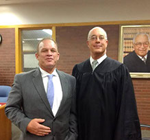

Bart Gavin Lansky

The founder and manager of Lansky Law Group, Bart Lansky has extensive experience in Land-Use, Construction, Environmental, and Property Tax Grievance Matters. With more than twenty-five years of experience in property management, construction, and development, Mr. Lansky has a large base of practical knowledge he brings to bear on real property matters.
Commercial real estate purchasers receive advice not only on the transaction itself but on zoning, property taxes, construction, environmental risk, leasing, and the feasibility and cost of future improvements. Developers seeking approvals receive representation in front of the Boards, as well as plan review, project feasibility, and value engineering services. Clients purchasing contaminated property receive not only due diligence advice, but also advice on the tax credits applicable, the regulatory process and costs for remediation. In addition to these services Bart also guides clients through construction and remediation projects as an owner’s representative.
Bart has rescued a significant number of construction projects from impending litigation by providing advice, oversight and inspiration to owners, contractors and subcontractors.
Bart enjoys working with intelligent business people who appreciate hard work and cost based business advice.